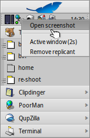

Русский
Русский Français
Français Deutsch
Deutsch Italiano
Italiano Español
Español Svenska
Svenska 日本語
日本語 Українська
Українська 中文 ［中文］
中文 ［中文］ Português
Português English
English Haiku-приложения для командной строки
Haiku-приложения для командной строки
| Расположение в Tracker: | /boot/system/bin /boot/common/bin ~/config/bin |
Все приложения командной строки, поставляемые вместе с Haiku располагаются в /boot/system/bin или в /boot/common/bin. Приложения, которые вы установили самостоятельно, должны располагаться в ~/config/bin. Указанные пути расположены в переменной PATH, таким образом приложения отыскиваются автоматически.
Ниже приводится неполный список приложений Haiku для командной строки, служащий в целях ознакомления с некоторыми из наиболее полезных приложений. Изучение остальных программ, находящихся в bin/, возлагается на пользователя. Запуск программы с параметром --help выведет справку по её использованию.
 Приложения для работы с атрибутами: listattr, catattr, addattr, rmattr, copyattr
Приложения для работы с атрибутами: listattr, catattr, addattr, rmattr, copyattr
Эти команды предназначены для отображения, извлечения, добавления и удаления атрибутов файлов. Помните, что в данный момент эти мета-данные доступны только на разделах, отформатированных в BFS. Перемещение файлов на другие файловые системы приведут к потере мета-данных!
Перечисленные команды описаны в теме Работа с атрибутами в Терминале.
Приложения для работы с индексами: lsindex, mkindex, reindex, rmindex
С помощью этих команд вы можете получить список атрибутов BFS, произвести их переиндексацию или удаление. Каждый раздел имеет собственный индекс, сохраняющийся при копировании файлов между разделами.
Эти команды описаны в теме Индексация.
Полезные скриптовые команды
Утилиты командной строки, приведенные ниже, особенно полезны для написания скриптов (смотрите тему Bash и скрипты).
alert | alert вызывает обычное окно предупрежния с заранее опеределенными иконкой, пояснительным текстом и кнопками (до трех). Например, следующая строка выведет на экран: alert --idea "FantasticApp(tm) installed successfully! Would you like a link to it?" "On Desktop" "In Deskbar" "No thanks"
| |
filepanel | filepanel отображает диалог загрузки или сохранения файла, позволяя пользователю выбрать файл или путь. В качестве возвращаемой величины будет передано имя файла или путь к папке. Для изменния доступны несколько параметров, таких как начальная папка, заголовок окна, имя для сохраняемого файла по умолчанию и ограничения на разрешенные типы файлов. Приведем пример: filepanel -s -t "Save your logfile" -d ~/config/settings -n Fantastic.log
| |
waitfor | waitfor удобный способ для ожидания запуска или завершения работы какого-либо приложения или нити. | |
query | query является аналогом панели "Найти", выполненным для командной строки. Существует способ быстрого создания правила поиска: постройте запрос в панели "Найти", переключитесь в режим , добавьте двойные кавычки (") в начале и в конце и вставьте строку после комманды query в Терминале или вашем скрипте. |


Другие команды
checkfs | checkfs - очень важный инструмент, используемый для проверки вашей файловой системы на наличие ошибок. Просто добавьте имя раздела или устройства, а утилита проверит каждый файл и по возможности исправит все несоотсветствия. | |
open | open очень полезный инструмент. С его помощью вы сможете открыть любой файл в предпочитаемом приложении, либо запустить приложение по его сигнатуре, не указывая точный путь до него. Это применимо к URL и "виртуальным" папкам . для текущей папки и .. для родительской папки - они откроются в Tracker. | |
desklink | desklink помещает иконку для любого файла, папки, запроса или приложения в трей Deskbar, и позволяет назначить контекстное меню, вызываемое правым кликом мыши по иконке для выполнения специальных действий. В качестве примера, попробуйте добавить приложение командной строки screenshot с несколькими параметрами ("\" в первой строке используется для разрыва строки в Terminal): desklink "cmd=Active window (2s):/bin/screenshot --window --border --delay 2" \ "cmd=Remove replicant:desklink --remove=screenshot" /bin/screenshot  |